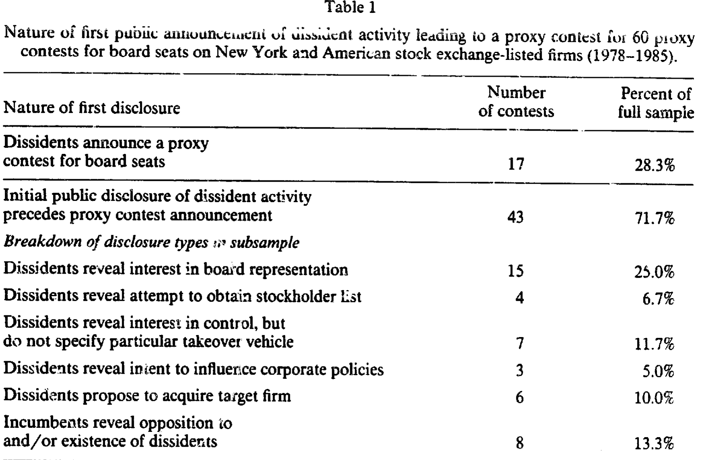
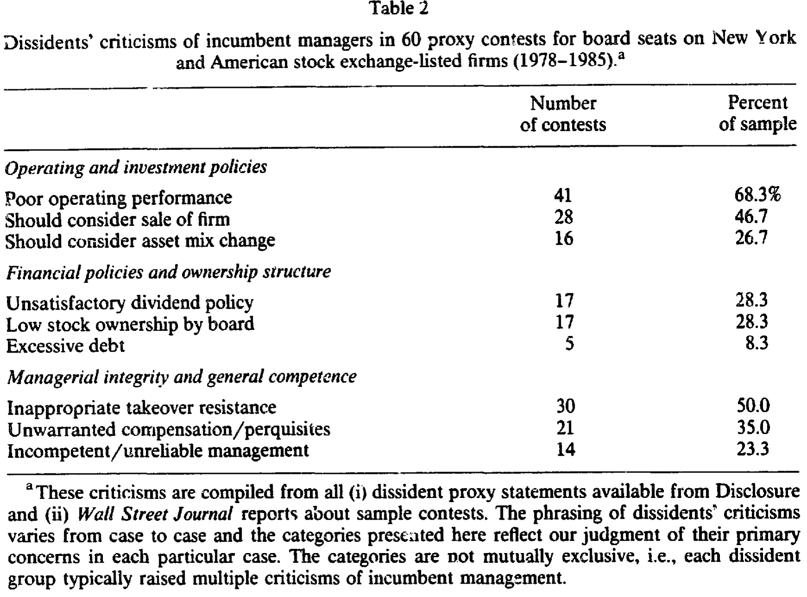
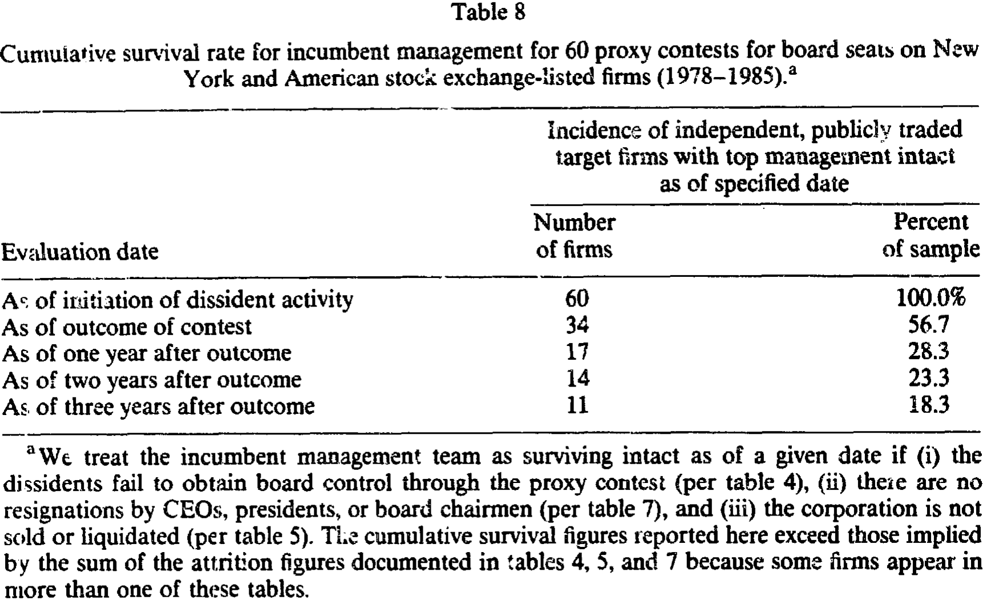
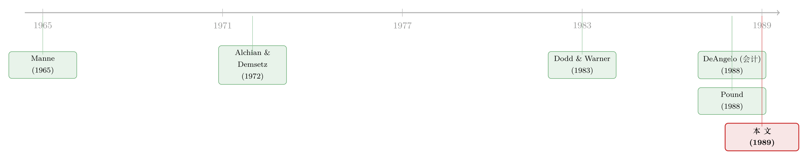

输掉了董事会选举，却照样把老板赶下了台
本文读的是 DeAngelo & DeAngelo (1989, Journal of Financial Economics)：作者追踪了 1978–1985 年间 60 场交易所上市公司的代理权之争 (proxy contest)，发现一个反直觉的事实——异议股东 (dissidents) 即便没能赢得董事会多数，他们的挑战照样常常逼走在任管理层；三年之后，只剩下不到五分之一的样本公司仍是「同一套班子掌舵、独立、公开上市」的样子。代理权之争真正的威力，不在它的胜负，而在它一旦发生。
1 一个被胜负表象骗了很久的问题
先说一个几乎被写进每本公司金融教科书的判断：代理权之争是股东手里「终极的纪律工具」，是惩戒那些不肯把公司价值做到最大的在任经理的最后一招 [Manne (1965)、Alchian and Demsetz (1972)]。
听上去很有力。可如果你接着翻一翻实证文献，会发现一个尴尬：异议股东几乎从来赢不了。Dodd and Warner (1983) 早就记录过，发起代理权之争的人通常拿不到董事会多数席位。于是一个很自然的推论是——既然挑战者大多落败，那这件「终极武器」是不是其实没什么牙齿？股东闹一场，老板岿然不动，公司照旧。
DeAngelo 夫妇这篇 1989 年的论文，正是冲着这个推论来的。他们问的问题很简单，却之前没人系统回答过：代理权之争结束之后，目标公司到底怎么样了？ 不是看选举那一天的输赢，而是看一年后、两年后、三年后，这家公司还在不在、老板还坐不坐得稳、公司还姓不姓「独立上市」。
答案，把「挑战者大多落败 ⇒ 武器没用」这条逻辑链彻底打断了。
2 数据：60 场代理权之争，盯三年
样本是 60 场针对 60 家交易所上市公司董事会席位的代理权之争，时间跨度 1978–1985。其中 40 家在纽约证券交易所（NYSE）上市，20 家在美国证券交易所（ASE）上市。来源文件是两家交易所的 Weekly Bulletins 以及 NYSE 的反向征集 (countersolicitation) 记录——这些文件原本识别出 70 场，作者剔除了 10 场（多为只针对某项具体公司政策、而非争夺董事席位的征集），留下干净的 60 场。
观察单位是「一场代理权之争 / 一家目标公司」。这不是一个用回归打天下的样本——60 这个数字注定了它是一篇靠逐案追踪 + 频数统计 + 案例研究说话的论文。事实上，文章末尾还附了一份对 20 家「异议股东没拿到董事会多数、但高管却在三年内辞职」的公司的逐案卷宗。这种「把每一家公司的命运一条条记下来」的笨功夫，恰恰是它最扎实的地方。
值得一提的是，作者顺手纠正了一个流行印象：人们总以为敌意要约 (hostile tender bid) 远多于代理权之争。可把本文 1978–1983 的样本与 Dodd and Warner (1983) 的 1962–1977 样本合并，董事席位之争在同期就有 141 场；而同一时期能被确认为敌意的上市公司要约也不过 171 例 [Dann and DeAngelo (1988)]。两者其实在一个量级上。
3 异议股东是怎么打这场仗的
在跳到那个核心发现之前，先看看这场仗是怎么打起来、怎么打下去的——因为它解释了「为什么输了选举也能赢」。
首先，这场冲突往往不是从「我要发起代理权之争」开始的。 如表 1 所示，在 60 场争斗中，只有 17 场（28.3%）是以「异议股东宣布要争夺董事席位」作为第一个公开信号；其余 43 场（71.7%）的公开冲突，早在正式宣战之前就以各种形式露了头——有人先表态想进董事会，有人先去索要股东名册，有人先放话要控制权却不点明手段，还有人直接提出收购整家公司。更说明问题的是，在那 17 场「以宣战开局」的案例里，有 14 场能查到双方此前已有私下分歧，其中 7 场的异议领袖本身就是公司former insider。

Table 1
这组数字其实在讲一个很反「教科书」的故事：代理权之争不是像敌意要约那样的「突袭」。它更像一场旷日持久谈判的激进一步——异议股东先在私下里劝在任管理层改弦更张，劝不动，才转向外部股东求援。
接着，一个自然的问题是：他们拿什么去说服其他股东？ 答案是「广撒网式的批评」。表 2 把 60 场争斗里异议股东对在任经理的指控做了归类：最常见的是「经营业绩差」，41 场（68.3%）；其次是「应当考虑出售公司」，28 场（46.7%）；「不当的反收购抵抗」也有 30 场（50.0%）；此外还有股利政策不满（17 场）、董事持股太低（17 场）、薪酬过高（21 场）等等。

Table 2
注意这里的措辞策略：异议股东几乎从不搬出复杂的统计分析，而是反复用一组简单、直观、人人看得懂的「坏结果」——会计亏损、股价从历史高点跌下来、股利被砍——去拼出一幅「管理层无能」的broad brush（大笔触）画像。作者的解释很到位：投票的股东没什么动力去投入精力做细致评估，所以你得给他们一眼就能认出的「证据」。（关于在代理权之争中会计信息与股价信息如何被使用，正是本文作者另一篇 DeAngelo (1988) 的主题。）
然后是一个容易被忽略的细节：谁在发起挑战？ 表 3 显示，60 场中有 29 场的异议领袖在目标公司所在行业有过经历，其中 10 场领袖曾受雇于目标公司或在其董事会任过职。更关键的是资源约束——48 场（五分之四）的异议团体里没有任何公开上市公司，全是个人或私人企业；只有 12 场有上市公司参与。而即便在这 12 场里，目标公司通常还比异议公司大：市值之比的均值是 2.05、中位数 1.37。换句话说，发起代理权之争的人，往往是「买不起、只能投票」的一方。这一点后面会变得重要。
4 真正关键的一步：把镜头从「选举日」拉到「三年后」
铺垫到这里，全文的转折出现了。
如果你只看选举结果，结论会很平淡：异议股东赢得董事会多数的，大约只有三分之一。武器似乎钝。
可作者偏要往后看。他们定义了一个「在任管理层存活」的口径：一家公司在某个时点算作「班子完好地独立存活」，当且仅当——(i) 异议股东没有通过代理权之争拿到董事会控制权，(ii) 没有 CEO、总裁或董事长辞职，(iii) 公司没有被出售或清算。三个条件，缺一不可。然后他们沿时间轴一格格地数下去。
如表 8 所示，这条「存活曲线」一路向下塌陷：争斗发起时是 60 家（100%）；到选举结果出来时已降到 34 家（56.7%）；一年后只剩 17 家（28.3%）；两年后 14 家（23.3%）；三年后——11 家，18.3%。

Table 8
不到五分之一。 这就是全文那句最有冲击力的话：三年之后，只有不到五分之一的样本公司，仍然是「由同一套管理层经营的、独立的、公开上市的公司」。
这个塌陷是从哪来的？拆开看：异议股东自己赢下董事会的约占三分之一；另有约三分之一的公司，在三年内发生了高管辞职——而且大多发生在第一年内；还有大约四分之一的公司被出售或清算。三股力量叠加，把「同一套班子还在掌舵」的公司挤到了只剩 11 家。
于是那条「挑战者大多落败 ⇒ 武器没用」的逻辑被彻底反转了：代理权之争对在任经理的威胁，远不止「异议股东赢得多数」这一个出口。 哪怕你在投票里赢了、把野蛮人挡在了门外，你也可能在一年内因为别的压力辞职，或者你的公司干脆被卖掉。一旦这场挑战materialize（成形），在任经理的位子就已经岌岌可危了。
那份关于 20 家「异议股东没赢、高管却走人」公司的逐案附录，正是为这个结论补上微观证据：在大多数案例里，辞职的具体情形都显示异议股东的努力在管理层更替中扮演了重要角色——尽管作者很诚实地承认，他们无法断言「异议股东的努力是唯一的决定性因素」，毕竟董事会的常规监督等其他纪律力量也可能最终导致同样的结果。
5 钱从哪里来：财富效应的「真正来源」
到这里还有最后一块拼图：股东到底有没有因此赚到钱？赚的钱又从哪来？
与 Dodd and Warner (1983) 一致，本文也发现代理权之争整体上伴随着股东财富的增加。但作者把这块「蛋糕」切开后看到了更有意思的结构：整体的财富收益，主要来自那些「异议活动最终导致公司被出售或清算」的样本公司。 也就是说，市场真正给出溢价的，是「这家公司要被卖掉/拆掉了」这件事，而不是「换了几个董事」本身。
反过来，在那些「在任经理成功击退异议股东」的失败案例里，股东财富会下跌——而且这种损失几乎全部集中在在任经理动用公司资源去诱使异议股东放弃收购的那些公司（也就是带有「绿邮 (greenmail)」色彩的赎买）。
这两条合在一起，指向同一个判断：代理权之争的股东财富后果，很大程度上是收购相关的收益与成本在驱动。它支持了作者贯穿全文的那个视角——代理权之争与其说是一次「选董事」，不如说是公众股东借机发起的一场「关于重大公司政策转向（尤其是要不要把公司卖掉）的公投」。这也和 Pound (1988) 的发现相互印证：异议股东若已正式提出（以胜选为条件的）收购要约，其赢得选举的概率更高；而且他们有时发起代理权之争根本不是为了董事席位，而是为了否决管理层的反收购章程修正案。
6 文献脉络
把这条线索捋一捋，能更清楚地看到本文站在哪。
最上游是「公司控制权市场 (market for corporate control)」这个大命题：Manne (1965) 把接管视为约束经理的市场机制，Alchian and Demsetz (1972) 从团队生产与监督的角度奠定了「谁来盯着经理」的理论底座。代理权之争作为其中一种控制权转移方式，第一篇系统的实证是 Dodd and Warner (1983)——它确立了两个「基准事实」：争斗伴随财富收益、异议股东通常拿不到多数。
接着，本文作者自己在 DeAngelo (1988) 里深入了「说服机制」——异议股东如何用会计与股价信息去说动投票者。几乎同期，Pound (1988) 从另一侧切入，揭示代理权之争常常是「收购的前奏」或「反收购的阻击战」。

DeAngelo & DeAngelo (1989) 这篇，正好处在「机制」与「后果」的交汇点上：它接过 Dodd and Warner 的基准，却把镜头从「选举日」一路拉长到「三年后」，从而发现了那个被胜负表象掩盖的真相。这条「输了选举照样换帅」的线索，后来在公司治理的代理权研究里反复回响——关于一场被外部异议股东点燃的著名战役，可参见《一场被「外人」点燃的股东起义：1989 年霍尼韦尔的代理权之争》；而异议股东「资源有限只能投票」这一动机，与《老板手里那点选票，到底拦不拦得住门口的野蛮人？》讲的控制权较量是同一枚硬币的两面。至于「卖掉公司才是市场真正鼓掌的事」这一财富效应逻辑，则与自由现金流假说一脉相承（参见《现金为什么一定要「还」出去？——四十年后，重读 Jensen 的自由现金流》）。
7 评论与延伸（Q&A + 研究方向）
(a) 几个可能的疑问
Q：异议股东大多输掉选举，凭什么说这件「武器」有威力？
因为「威力」不该用选举胜负来度量。本文的关键贡献正是换了把尺子：三年后只剩
18.3%的公司仍由原班子独立掌舵。换帅可以通过赢得董事会、可以通过事后辞职、也可以通过整家公司被卖掉来实现——选举只是其中一个出口。
Q：「高管在争斗后辞职」会不会只是巧合，未必是异议股东逼的？
这正是本文识别上最薄弱的环节，作者也很坦诚。他们用 20 份逐案卷宗来论证大多数辞职「在情形上」与异议努力相关，但明确承认无法排除董事会常规监督等其他力量会导致同样结果。这是相关性证据，不是干净的因果。
Q：代理权之争和敌意要约到底差在哪？
三点。其一，要约多是「突袭」，而代理权之争通常是长期私下谈判破裂后的公开升级（
71.7%的争斗在宣战前已露头）。其二，发起者资源不同——48/60的异议团体里没有任何上市公司，是「买不起只能投票」的一方。其三，要约的目标通常远小于收购方，而代理权之争里目标往往比异议方更大（市值比中位数1.37）。
Q：股东赚到的钱，是「换了好董事」带来的吗？
不是。整体财富收益主要集中在「异议活动最终导致公司被出售或清算」的公司；而在任经理用公司资源赎买异议股东的失败案例里，股东反而亏钱。市场定价的是「公司要被卖掉」这件事，不是董事会的人事更替。
Q：这是否意味着「只有差劲的经理才会被挑战和赶走」？
作者特意警告：不能这么推。因为代理权之争之所以发生，恰恰是因为评估「谁是更优管理团队」存在实质性的信息成本。正因如此，有时反而是更能干的在任经理被挑战并被换掉，有时较差的经理却得以存活。代理权之争不保证把控制权交给更优的一方。
Q：样本只有 60 家、且止于 1985 年，结论还站得住吗？
量级上需谨慎，但方向相当稳健——存活率从
100%单调塌到18.3%是一条很难被少数异常案例推翻的曲线。外部效度则要打折：1980 年代是反收购防御、绿邮、杠杆收购的高峰期，制度环境特殊；换到今天（毒丸普及、机构投资者主导、对冲基金维权兴起）未必复现同样的比例。
(b) 几个可能的研究问题与提案
1. 代理权之争中的公司债持有人，是赢家还是输家？
【经济故事】本文证明代理权之争常以「出售/清算/换帅」收场，而这些事件对债权人的含义与对股东截然不同——卖给杠杆收购方可能意味着债务被稀释、信用利差跳升，清算则可能提前兑付。股东的财富收益里，有多少其实是从债权人手里转移过来的？ 【可行性】中。需要把代理权之争样本与
TRACE/ Lehman 债券数据匹配，做债券事件研究。难点在于早期样本（1980s）债券交易数据稀薄，可行的做法是把样本期延展到 2002 年 TRACE 之后的维权案例，识别策略用「争斗公告 / 结局公告」的窗口异常收益。
2. 外资异议股东与本土异议股东，逼退管理层的「成功率」是否不同？
【经济故事】本文强调资源约束塑造了「只能投票」的选择。跨境维权者面临信息劣势与协调成本更高的本地股东基础，理论上更难逼宫；但他们也可能带来本土股东缺乏的接管相关专长。这恰好能给「外资是不是更弱的监督者」这场争论添一块证据。 【可行性】中。需要一个跨国维权事件库（如
FactSet SharkWatch的全球部分）+ 发起人国籍标注。识别上可比较同一目标国、同一行业内本土 vs. 外资发起的争斗在「三年存活率」上的差异，但发起人选择目标本身是内生的，需要用工具或匹配处理。
3. 「存活率曲线」对公司债二级市场流动性的冲击。
【经济故事】一旦代理权之争成形，公司前途的不确定性骤增——它可能被卖、被拆、被清算。这种「结局高度发散」的状态，理论上会拉宽债券买卖价差、压缩做市商愿意承接的库存。代理权之争或许是一个干净的「基本面不确定性冲击」实验场。 【可行性】高。TRACE 提供逐笔成交，可直接测算争斗公告前后该发行人债券的
Roll/Amihud等流动性指标变化，并以同评级、同久期债券做对照组。数据与识别都现成，doable。
4. 重做「不到五分之一」：当代维权（hedge-fund activism）时代的存活率。
【经济故事】本文的
18.3%是 1980 年代制度环境的产物。如今毒丸、错列董事会、机构持股结构都变了，维权方也从「买不起的个人」变成了资金雄厚的对冲基金。同样口径下，今天三年后「原班子独立存活」的比例是更高还是更低？ 【可行性】高。用 13D 申报 + SharkWatch 构建当代维权样本，严格复刻本文三条件（未失董事会控制、无 CEO/董事长/总裁辞职、未被出售清算），按年追踪三年。纯描述性复刻即可，识别压力小，是一篇很好的「老问题新数据」论文。
5. 资源约束作为代理权之争「替代品」选择的决定因素。
【经济故事】本文观察到
48/60的异议方无力收购、只能投票，且即便有上市公司参与，其也多比目标小、且持有大额合并股块（怕稀释自身控制权）。这暗示「选代理权之争而非要约」是一个由财富约束 + 防稀释动机共同决定的内生选择。把这个选择显式建模并实证，是一个干净的问题。 【可行性】中。需要为每场代理权之争构造「反事实要约可行性」（异议方净资产、目标市值、目标的错列董事会/毒丸等接管壁垒）。本文表 3 已给出部分变量，可扩展样本后用 probit 建模「投票 vs. 要约」的选择，但「反事实能否买得起」的度量较粗糙。
8 参考文献
DeAngelo, H., & DeAngelo, L. (1989). Proxy contests and the governance of publicly held corporations. Journal of Financial Economics 23(1), 29–59.
Alchian, A. A., & Demsetz, H. (1972). Production, information costs, and economic organization. American Economic Review 62(5), 777–795.
Castanias, R., & Johnson, H. (1987). 见 DeAngelo & DeAngelo (1989) 所引：关于代理权之争前公司股利收益率偏低的证据。
Dann, L. Y., & DeAngelo, H. (1988). Corporate financial policy and corporate control: A study of defensive adjustments in asset and ownership structure. Journal of Financial Economics 20, 87–127.
DeAngelo, L. E. (1988). Managerial competition, information costs, and corporate governance: The use of accounting performance measures in proxy contests. Journal of Accounting and Economics 10(1), 3–36.
Dodd, P., & Warner, J. B. (1983). On corporate governance: A study of proxy contests. Journal of Financial Economics 11(1–4), 401–438.
Manne, H. G. (1965). Mergers and the market for corporate control. Journal of Political Economy 73(2), 110–120.
Pound, J. (1988). Proxy contests and the efficiency of shareholder oversight. Journal of Financial Economics 20, 237–265.